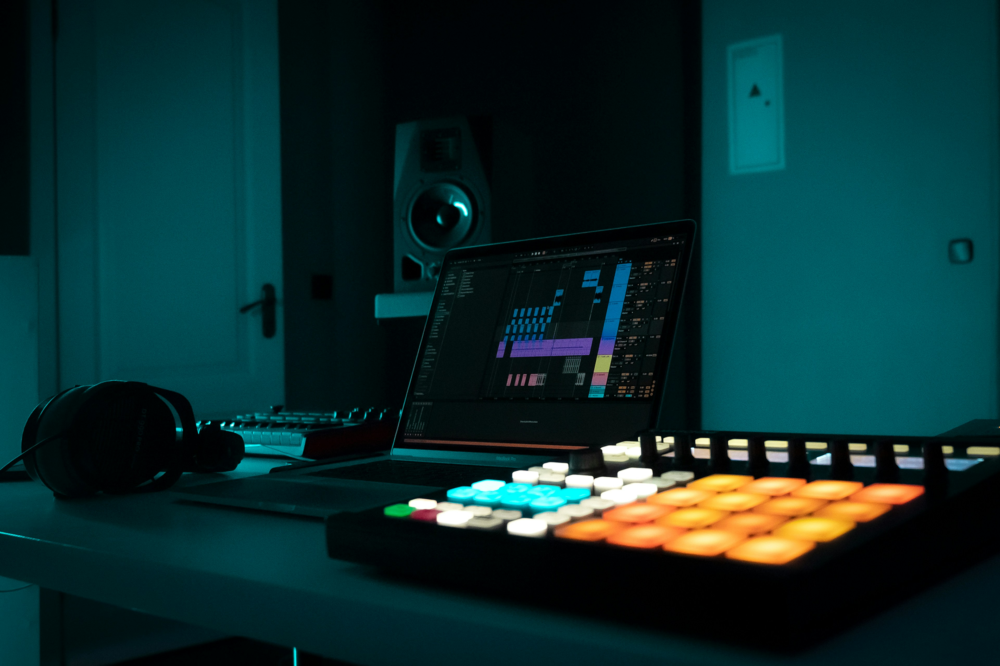

Sampling is a technique that involves reusing a portion (or sample) of a song or recording in another recording, and is a foundational technique in electronic music production.
Explore this page and learn more about the technique.
A Brief History of Sampling
The origins of sampling dates back to the 1970s with the emergence of hip-hop. Artists like DJ Kool Herc were known to play funk and soul records while MCs would rap live over different sections of the records; the very basic idea of sampling.

A laptop and MIDI launchpad with music software running.
As music technology and equipment became more developed, sampling was able to evolve and become more complex. Samplers like the Akai MPC allowed artists to move beyond sampling full loops to taking shorter individual parts of songs and mix them together, bringing about the sound of modern sampling.
A laptop and MIDI launchpad with music software running.
What Makes a Good Sample?
Sampling is a versatile technique that can provide sonic depth to a song. But what makes for a good sample? Considering it is music, the answer to that question can be quite subjective, however there are some factors that can make any sample sound amazing and improve a song.
Factors like a sample's sound quality, sonic flexibility, emotional quality, and most importantly the artist's creativity and vision can make or break a sample for a song.
All in all though, it comes down to what sounds good to the artist, and the production techniques they apply to the sample that make a sample "good".
Sampling in Action
Before their retirement, Daft Punk were considered one of the best sampling artists in EDM. Check out this video detailing how they manipulated samples for their song Face To Face.
Sample Breakdown: Daft Punk - Face to Face
Music devices like launchpads have allowed artists to continue to push the creative bounds of sampling. Check out these two tracks that are comprised almost entirely of samples that are triggered using a launchpad.